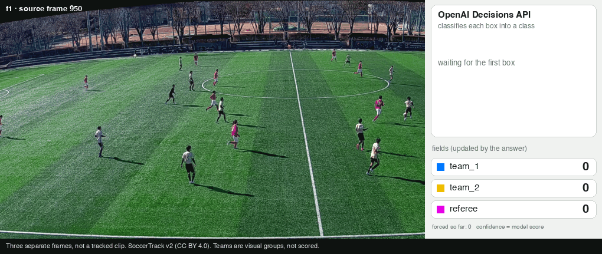
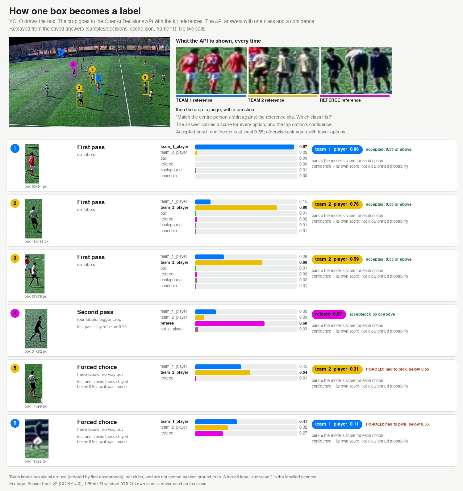
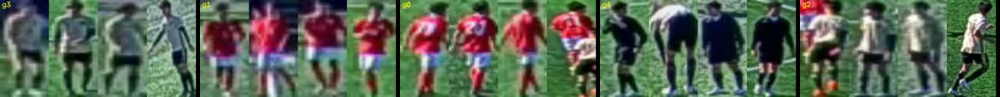
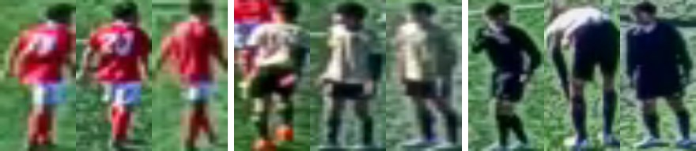
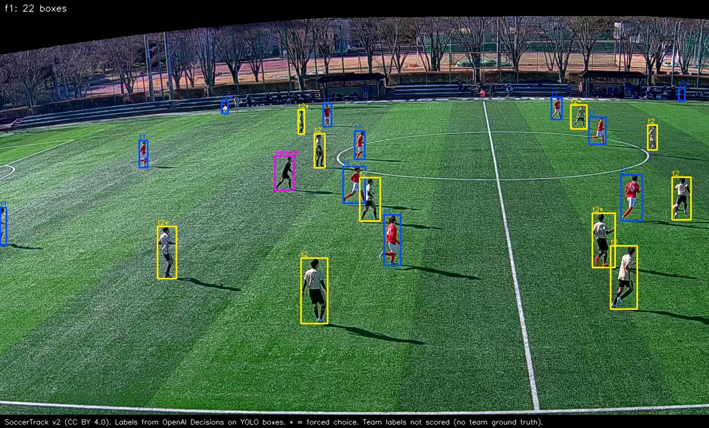
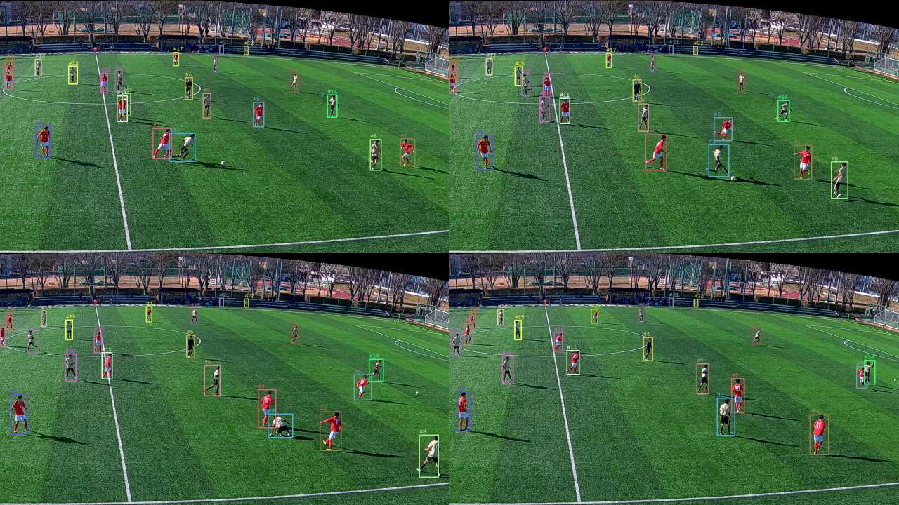

Zero-shot football vision
Label players in a football frame with no training and no hand labels.
The idea
A public YOLO model proposes regions and ByteTrack follows them over time. Neither was trained on our footage. The OpenAI Decisions API then judges each region and must answer with one of four labels. We train nothing and draw no labels by hand. Every answer is cached, counted and capped.
- ball
- referee
- team_1_player
- team_2_player
YOLO's own labels are metadata only. They never become a class. Decisions is the classifier.


The flow
- Frames
- HUD mask
- YOLO proposalspitch gate
- Kit clusters
- Decisionskits, boxes, forced four labels
- Ball search
- Dedupe
- Tracking
- Export
Shaded boxes are the steps that call Decisions. The ball search also asks Decisions to confirm a tight box.
Step by step
Step 1. Three real frames
Three 1280x720 windows are cut from a SoccerTrack v2 panorama and saved as lossless PNGs. The file name holds the source frame number, so the repo needs no big video.
Step 2. Find and mask the HUD
Broadcast-style footage has a scoreboard and minimap that hold many small white dots that look like balls. This footage comes from a fixed camera with no overlay, so the mask is switched off here (HUD_MODE = "none"); the picture shows an empty mask. HUD edges land on the same pixels in every frame, so we keep the edges that never move and turn them into rectangles. If the mask would cover more than 30% of the frame, it is thrown away.
Step 3. YOLO proposes, the pitch filters
YOLO is public and pretrained. We keep its boxes and ignore its opinions. A box stays only if its feet, the bottom-centre point, are on the pitch. The tolerance grows sideways and downward only, because growing it upward lets spectators in.
Step 4. Kit colours, a guess only
We take each box's torso, remove grass pixels, drop blurry crops and cluster the median colours with k-means. This gives clusters, not teams. Colour alone cannot tell a goalkeeper from a referee, so the clusters go to Decisions.

Step 5. Dry run
Before any call, the notebook counts what the next steps would ask for and checks it against the cap. This step makes zero calls. With LIVE_CALLS = False a cache miss is skipped, never sent, so the dry run shows zero live calls.
Step 6. Decisions judges the kit clusters
For each cluster we send a montage of its sharpest crops. We ask whether it is one kit, and whether it is an outfield team, goalkeeper, official or a mix. The two best outfield clusters become team_1_player and team_2_player, ordered by earliest appearance.

Step 7. Label every box, then force a choice
Each request carries the team 1 reference, the team 2 reference and the crop. Boxes below the accept threshold stay uncertain and get a second pass with four labels and a bigger crop. Anything still undecided must pick one of the four labels, and the row is tagged forced=True.

Step 8. The ball
The ball is about 5 pixels and white on green. We cover the pitch only with overlapping windows and ask Decisions whether a ball is present in each. Image processing, not the model, makes the tight box, and a separate question confirms it. Windows never reached are logged unsearched.
Step 9. Remove duplicates
Duplicate removal is class-aware. Two boxes on one player collapse into one, but a ball on top of a player survives. Thick box means tight and confirmed. Thin box with ? means a ball is present but not localized. * marks a forced label.
Step 10. Tracking across a clip
A YOLO box has no memory. ByteTrack gives each person an id that persists across frames, so we can judge a track instead of every box. The notebook runs this on a 3 second clip with zero calls. A live per-track vote would use about three crops from different moments, and would split a track if the crops disagree.

Step 11. Export
The export keeps what you need to audit a claim later: frame ids, boxes in original pixels, decision type, class, confidence, uncertainty reasons, localization status and the call log.
Cost
A live run costs API calls, on the sample frames and on your own images.
- Sample frames:
samples/decisions_cache.jsonholds 1,012 answers from earlier live runs, but cache keys include the kit images, which depend on the frame set, so a fresh run mostly misses. WithLIVE_CALLS = Falsethe misses are skipped and boxes come outuncertain(trial run: 149 lookups, 0 hits, 70 uncertain, 0 team labels). To reproduce the published labels, setOPENAI_API_KEY,LIVE_CALLS = TrueandMAX_CALLSto about 200 (about 150 calls projected). - Your own images: new crops, so new calls.
- Dry run first: set
LIVE_CALLS = Falseto count the calls. Nothing is sent. - Going live: add
OPENAI_API_KEYto.env, then setLIVE_CALLS = True. - Hard cap:
MAX_CALLSdefaults to 70. The run stops at the cap. A full live run on three new frames needs a few hundred calls, so raise it deliberately. - Re-runs: new answers are saved to your own cache, so repeating the same images is free.
Conventional route vs this
| Step | Conventional route | This repo |
|---|---|---|
| Data | Collect footage | Use the footage you have |
| Labels | Draw boxes and class labels by hand | Propose regions with a public YOLO model |
| Model | Train or fine-tune a detector | Judge each region with Decisions |
| Fixing | Check, fix labels, repeat | Read the pictures, check forced rows |
| New kits, camera or footage | Label and retrain again | Run again; new images make new calls |
| What it costs | Labeling time | API calls, cached, counted and capped |
We did not measure the labeling time or cost of a trained detector. This page makes no claim about how the two compare in dollars or hours.
What it does not do
- Confidence numbers are not probabilities. The thresholds are experimental.
team_1/team_2are arbitrary visual groups (ordered by who appears first), not clubs or home/away.- Nothing is interpolated. A frame that was not searched is logged
unsearched, not empty. Tracked ball frames are markedtracked, and are not confirmations. - The ball was not found. It is about 5 px, and the 144-window search (3 frames x 48) never produced a box worth confirming on this footage. The one ball box in f2 was removed as false.
- Team labels are not measured. The dataset has no team ground truth. By eye, red reads reliably as team_1; cream players are sometimes pulled into team_1, and cream or dark outfield players are sometimes called referee.
- Forced labels (21 of 69 published boxes) are guesses.
- The tracking step is shown as a dry run. Its live vote (about 78 calls for the 3 s clip) was not run for this repo.
- No pitch view, distance or speed. The panorama's lines are curved, so it needs the dataset's distortion maps, not a plain homography.